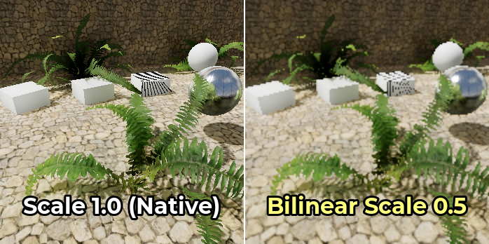
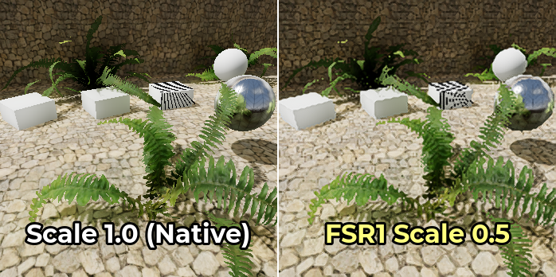
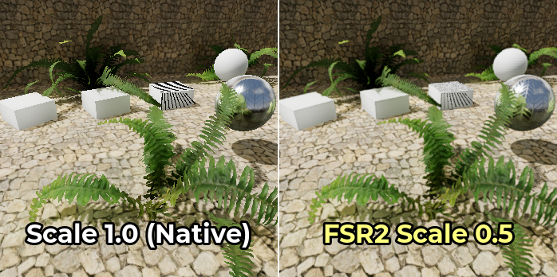
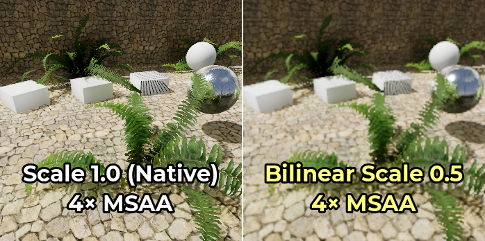
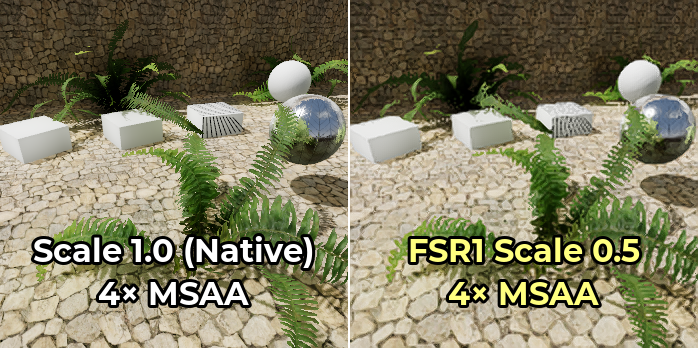
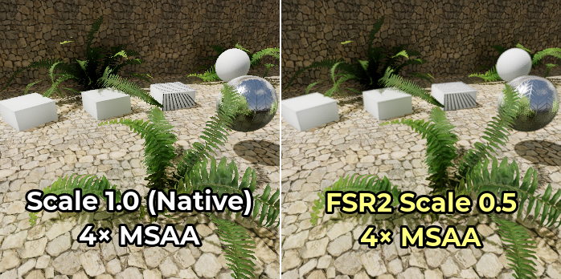
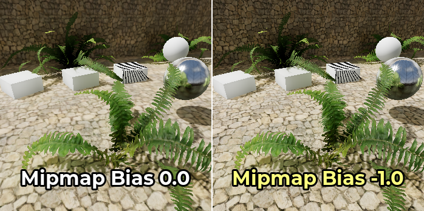

Co giãn độ phân giải
Tại sao nên dùng co giãn độ phân giải?
Với độ phức tạp kết xuất ngày càng tăng của các game hiện đại, việc kết xuất ở độ phân giải gốc không phải lúc nào cũng khả thi, đặc biệt trên các GPU cấp thấp.
Co giãn độ phân giải là một trong những cách trực tiếp nhất để tác động đến yêu cầu GPU của một scene. Trong các scene bị nghẽn ở GPU (chứ không phải CPU), giảm tỉ lệ độ phân giải có thể cải thiện hiệu năng đáng kể. Co giãn độ phân giải đặc biệt quan trọng trên GPU di động, nơi ngân sách hiệu năng và điện năng bị hạn chế.
Dù co giãn độ phân giải là một công cụ quan trọng, hãy nhớ rằng nó không nhằm thay thế việc giảm cài đặt đồ họa trên phần cứng cấp thấp. Hãy cân nhắc cung cấp cả tùy chọn tỉ lệ độ phân giải lẫn cài đặt đồ họa trong menu của game.
Xem thêm
Bạn có thể so sánh trực tiếp các chế độ và hệ số co giãn độ phân giải bằng dự án demo 3D Antialiasing.
Ghi chú
Hiện tại co giãn độ phân giải chưa hỗ trợ kết xuất 2D, nhưng có thể mô phỏng bằng chế độ stretch viewport. Xem Đa độ phân giải để biết thêm thông tin.
Các tùy chọn co giãn độ phân giải
Trong phần Rendering > Scaling 3D của Project Settings nâng cao, bạn có thể tìm thấy một số tùy chọn cho co giãn độ phân giải 3D:
Chế độ co giãn
Bilinear: Lọc bilinear tiêu chuẩn (mặc định). Chế độ này được dùng làm phương án dự phòng khi renderer hiện tại không hỗ trợ FSR 1.0 hoặc FSR 2.2. Có trên mọi renderer.
FSR 1.0: AMD FidelityFX Super Resolution 1.0. Chậm hơn nhưng chất lượng cao hơn so với co giãn bilinear. Trên các GPU rất yếu, chi phí của FSR1 có thể quá cao để đáng dùng thay cho co giãn bilinear. Chỉ có khi dùng renderer Forward+.
FSR 2.2: AMD FidelityFX Super Resolution 2.2 (từ Godot 4.2). Chậm nhất, nhưng chất lượng còn cao hơn so với FSR1 và co giãn bilinear. Trên các GPU yếu, chi phí của FSR2 có thể quá cao để đáng dùng thay cho co giãn bilinear hoặc FSR1. Để FSR2 đạt hiệu năng ngang FSR1, bạn cần dùng hệ số tỉ lệ độ phân giải thấp hơn. Chỉ có khi dùng renderer Forward+.
Dưới đây là các ảnh so sánh giữa độ phân giải gốc, co giãn bilinear với tỉ lệ độ phân giải 50%, FSR1 và FSR2 với tỉ lệ độ phân giải 50%:



Upscaling FSR1 cho kết quả tốt nhất khi kết hợp với một dạng khử răng cưa (antialiasing) khác. Trong trường hợp này nên ưu tiên dùng khử răng cưa theo thời gian (TAA) hoặc khử răng cưa đa mẫu (MSAA), vì FXAA không bổ sung thông tin theo thời gian và làm ảnh bị mờ hơn.
Mặt khác, FSR2 có sẵn cơ chế khử răng cưa theo thời gian riêng. Điều này có nghĩa là bạn không cần bật các phương pháp khử răng cưa khác để ảnh kết quả trông mượt. Cài đặt dự án Use TAA sẽ bị bỏ qua khi FSR2 được dùng làm phương pháp co giãn 3D, vì khử răng cưa theo thời gian của FSR2 được ưu tiên.
Đây là cùng phép so sánh đó, nhưng với 4× MSAA được bật trên tất cả các ảnh:



Hãy để ý cách upscaling cạnh của FSR1 trở nên thuyết phục hơn nhiều khi bật 4× MSAA. Tuy nhiên, FSR2 không được lợi nhiều từ việc bật MSAA vì nó đã thực hiện khử răng cưa theo thời gian.
Tỉ lệ kết xuất
Cài đặt Rendering > Scaling 3D > Scale điều chỉnh tỉ lệ độ phân giải. 1.0 là tỉ lệ độ phân giải đầy đủ, khi đó độ phân giải kết xuất 3D bằng độ phân giải kết xuất 2D. Tỉ lệ độ phân giải dưới 1.0 có thể dùng để tăng tốc kết xuất, đổi lại ảnh cuối cùng bị mờ hơn và răng cưa nhiều hơn.
Tỉ lệ kết xuất có thể được điều chỉnh khi đang chạy bằng cách thay đổi thuộc tính scaling_3d_scale trên một node class_Viewport.
Tỉ lệ độ phân giải trên 1.0 có thể dùng cho khử răng cưa siêu lấy mẫu (SSAA). Cách này cho khả năng khử răng cưa nhưng với chi phí hiệu năng rất cao, và không được khuyến nghị trong hầu hết trường hợp. Xem Khử răng cưa 3D để biết thêm thông tin.
Các bảng dưới đây liệt kê những độ phân giải màn hình phổ biến, độ phân giải kết xuất 3D tương ứng và số megapixel cần kết xuất mỗi khung hình tùy theo tùy chọn tỉ lệ kết xuất. Trong mỗi bảng, các hàng được sắp xếp từ nhanh nhất đến chậm nhất.
Ghi chú
Tỉ lệ độ phân giải được định nghĩa theo từng trục. Ví dụ, điều này có nghĩa là giảm một nửa hệ số tỉ lệ độ phân giải sẽ giảm số megapixel được kết xuất mỗi khung hình đi 4 lần, chứ không phải 2. Vì vậy, hệ số tỉ lệ độ phân giải rất thấp hoặc rất cao có thể ảnh hưởng đến hiệu năng nhiều hơn bạn nghĩ.
1920×1080 (Full HD)
Hệ số tỉ lệ độ phân giải |
Độ phân giải kết xuất 3D |
Số megapixel kết xuất mỗi khung hình |
|---|---|---|
|
960×540 |
0.52 MPix |
|
1286×723 |
0.93 MPix |
|
1440×810 |
1.17 MPix |
|
1632×918 |
1.50 MPix |
|
1920×1080 |
2.07 MPix |
|
2553×1436 |
3.67 MPix |
|
2880×1620 |
4.67 MPix |
|
3840×2160 |
8.29 MPix |
2560×1440 (QHD)
Hệ số tỉ lệ độ phân giải |
Độ phân giải kết xuất 3D |
Số megapixel kết xuất mỗi khung hình |
|---|---|---|
|
1280×720 |
0.92 MPix |
|
1715×964 |
1.65 MPix |
|
1920×1080 |
2.07 MPix |
|
2176×1224 |
2.66 MPix |
|
2560×1440 |
3.69 MPix |
|
3404×1915 |
6.52 MPix |
|
3840×2160 |
8.29 MPix |
|
5120×2880 |
14.75 MPix |
3840×2160 (Ultra HD "4K")
Hệ số tỉ lệ độ phân giải |
Độ phân giải kết xuất 3D |
Số megapixel kết xuất mỗi khung hình |
|---|---|---|
|
1920×1080 |
2.07 MPix |
|
2572×1447 |
3.72 MPix |
|
2880×1620 |
4.67 MPix |
|
3264×1836 |
5.99 MPix |
|
3840×2160 |
8.29 MPix |
|
5107×2872 |
14.67 MPix |
|
5760×3240 |
18.66 MPix |
|
7680×4320 |
33.18 MPix |
Độ sắc nét FSR
Tính năng này chỉ có trong renderer Forward+, không có trong renderer Mobile hoặc Compatibility.
Khi dùng chế độ co giãn FSR1 hoặc FSR2, độ sắc nét có thể được điều khiển bằng cài đặt dự án nâng cao Rendering > Scaling 3D > FSR Sharpness.
Cường độ ở đây bị đảo ngược so với hầu hết các thanh trượt độ sắc nét khác: giá trị thấp hơn cho ảnh cuối cùng sắc nét hơn, còn giá trị cao hơn sẽ giảm tác động của bộ lọc làm sắc nét. 0.0 là sắc nét nhất, còn 2.0 là ít sắc nét nhất. Giá trị mặc định 0.2 tạo sự cân bằng giữa việc giữ độ sắc nét của ảnh gốc và tránh răng cưa phát sinh do làm sắc nét quá mức.
Ghi chú
Nếu bạn muốn làm sắc nét khi kết xuất ở độ phân giải gốc, hiện tại Godot không cho phép dùng thành phần làm sắc nét của FSR1 (RCAS) tách biệt với thành phần upscaling (EASU).
Để khắc phục, bạn có thể đặt tỉ lệ kết xuất 3D là 0.99, đặt chế độ co giãn là FSR 1.0 rồi điều chỉnh độ sắc nét FSR khi cần. Cách này cho phép dùng FSR1 trong khi kết xuất ở độ phân giải gần như gốc.
Ngoài ra, bạn có thể đặt chế độ co giãn là FSR 2.2 với tỉ lệ kết xuất 3D là 1.0 nếu GPU còn đủ dư địa. Cách này cũng cho khử răng cưa theo thời gian chất lượng cao. Cài đặt FSR Sharpness vẫn hoạt động trong trường hợp này.
Mipmap bias
Chỉ khả dụng với renderer Forward+ và Mobile, không có trong renderer Compatibility.
Godot tự động dùng mipmap bias âm cho texture khi tỉ lệ độ phân giải 3D được đặt dưới 1.0. Điều này giúp giữ chi tiết texture tốt hơn, đổi lại các texture nhiều chi tiết sẽ trông lấm tấm (grainy).
Texture LOD bias hiện ảnh hưởng đến cả kết xuất 2D và 3D theo cùng một cách. Tuy nhiên, hãy nhớ rằng nó chỉ có tác dụng với các texture đã bật mipmap. Texture dùng trong 2D mặc định không bật mipmap, nghĩa là chỉ kết xuất 3D bị ảnh hưởng, trừ khi bạn đã bật mipmap cho texture 2D trong Import dock.
Công thức dùng để xác định texture mipmap bias là: log2f(min(scaling_3d_scale, 1.0)) + custom_texture_mipmap_bias
Để bù lại độ mờ do một số phương pháp khử răng cưa gây ra, Godot còn cộng thêm độ lệch -0.25 khi bật FXAA, và -0.5 khi bật TAA. Nếu cả hai cùng được bật, độ lệch -0.75 sẽ được dùng. Độ lệch mipmap bias này được áp dụng trước độ lệch do co giãn độ phân giải, nên nó không thay đổi theo tỉ lệ độ phân giải.
Texture LOD bias có thể được thay đổi thủ công bằng cách điều chỉnh cài đặt dự án nâng cao Rendering > Textures > Default Filters > Texture Mipmap Bias. Nó cũng có thể được thay đổi khi đang chạy trên các Viewport bằng cách điều chỉnh thuộc tính texture_mipmap_bias.
Cảnh báo
Điều chỉnh mipmap LOD bias thủ công có thể hữu ích trong một số tình huống, nhưng cần làm cẩn thận để ảnh cuối cùng không bị lấm tấm khi chuyển động.
Mipmap LOD bias âm cũng có thể làm giảm hiệu năng do các mip độ phân giải cao hơn phải được lấy mẫu ở khoảng cách xa hơn. Giá trị khuyến nghị cho độ lệch thủ công là từ -0.5 đến 0.0.
Mipmap LOD bias dương sẽ khiến các texture có mipmap trông mờ hơn dự định. Điều này có thể cải thiện hiệu năng một chút, nhưng nói chung không được khuyến nghị vì mức suy giảm chất lượng hình ảnh thường không đáng so với hiệu năng thu được.
Ví dụ dưới đây cho thấy một trường hợp cực đoan, với mipmap LOD bias là -1.0 và tắt lọc bất đẳng hướng (anisotropic filtering) để sự khác biệt dễ thấy hơn:

Khắc phục sự cố
Hiệu năng không tăng nhiều khi giảm tỉ lệ độ phân giải
Nếu hiệu năng không tăng nhiều khi giảm tỉ lệ độ phân giải xuống mức như 0.5, nhiều khả năng điểm nghẽn hiệu năng nằm ở chỗ khác trong scene của bạn. Ví dụ, scene có thể có quá nhiều draw call, gây nghẽn CPU. Tương tự, bạn có thể đang bật quá nhiều hiệu ứng đồ họa so với khả năng xử lý của GPU (như SDFGI, SSAO hoặc SSR).
Xem các bài hướng dẫn Hiệu năng để biết thêm thông tin.